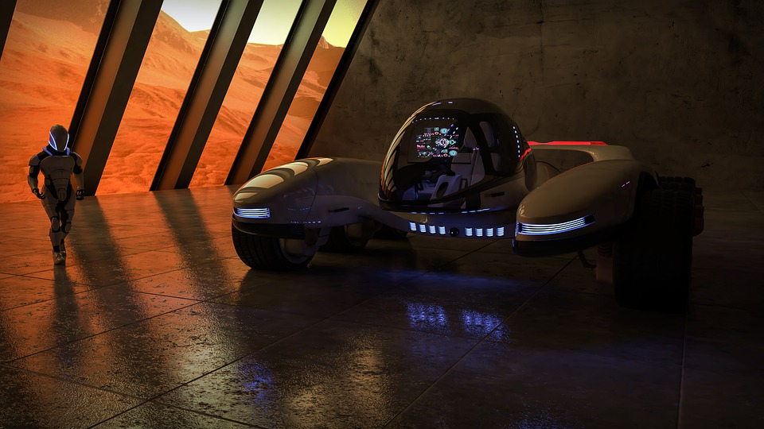

You arrive at Mars, a planet that you, as an Earthling, already have citizenship to. There is need to pass through customs, so you land quickly at Argire Planytia. You need a rover, so you stop by at Damian's Dune Rentals to rent one for the day, where you pay before you drive every 50 kilometers.

These rovers are programmed to return on their own should they be abandoned or lost. Wallace's map says to look for a shrine on the slope of Olympus Mons, and you scale the gigantic mountain. Upon reaching the shrine, you encounter a lady meditating.

You tell her your story and show her the map. She seems to have known Wild Wallace personally, and a single tear rolls down her cheek as you tell her about Wild Wallace's demise. She collects herself, still having not spoken a single word. Finally, she says a riddle:
"You can swallow me, but I consume you too. What am I?"